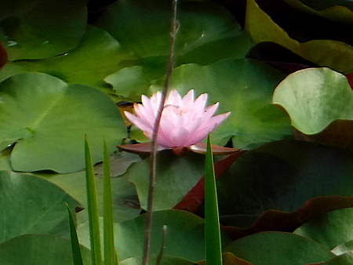
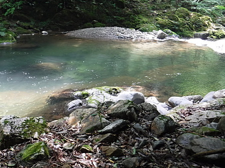
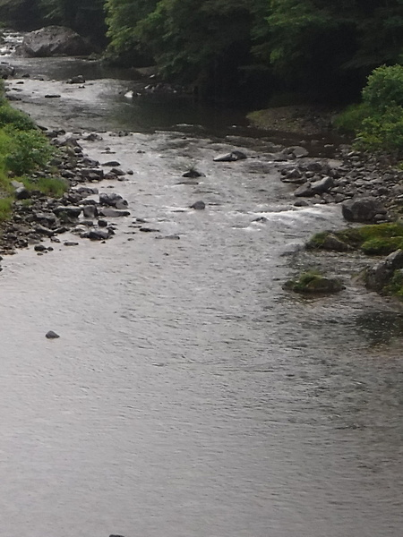

釣行日誌 故郷編
2022/07/09 魚は釣れずに脚が攣った
今日も今日とて、レンタカーを借りて渓流釣りへ。早起きして弁当を作り、暑くなるので麦茶をたくさん持った。
出がけにいつもとは違う道を通ると、街中の池でライギョ釣りしている人が居て、しばし見学する。蓮の花が綺麗に咲いていた。

予定通り、ガソリンスタンドの開店と同時に店に入り、7:40 よりレンタカーで出発。
比較的飛ばして､10:15に現場に着いた。空き地に停め、少し上手に歩いて廃屋脇から入渓する。
最初の大淵があるポイントで、石の裏からヒット、銀色が煌めいたのでアマゴだったか？ けれどもバラシ。

掛かりが浅かったように思えたので、また出るかも？と思い、場を少し休ませるため、上流を探りに行く。
なぜか今日はスプールからのラインの出が良くない。トラブルか？ 小さなループが出来ていたが、直さずにそのままごまかして釣りを続ける。
最初の大淵に戻り、夏場には絶対的に効く黒のメップス、黄色斑点付きを選び、ゆっくりと逆引きする。思い通りの位置でヒット！ 大きさから、さっきの魚だろうと思われた。
が！ しかし！ スプールからもじゃっとパーマが発生、ハンドルが動かなくなってそれ以上巻き取れない！ しょうがないので、フライフィッシングのように、竿を掲げ、ナイロンラインを手で手繰り寄せてファイトする。何とか岸辺まで寄せてきて、ランディングネットを取り出そうか？ というタイミングでバレた。（泣） あのライントラブルは、気付いたときに直しておくべきだった。
野球監督の野村氏の言葉ではないが、「備えなければ、憂いあり」であった。
それから延々と釣り下るが、魚影もアタリも無い。オマケに魚を狙って鵜まで飛んで来た。
昼食を食べる時間も惜しんで釣り続けるが、状況は変わらず、ボウズ状態が続く。
弁当を済ませ、下流域では出そうもないので道路へ上がり、車で上流の区間を目指す。
旧道のカーブへ出て、炭焼き小屋の跡地に停めて、小径をいそいそと降りてゆく。
さて！ と釣り上がるつもりが、なんと上流に人影が！ こりゃイカンと、しばし、その釣り人を観察してみる。僕よりは年配の、餌釣りの人だった。また小径を引き返し、車でさらに上流へ向かうと、白い車が停めてある。僕が来る日にはいつも見かけるH市ナンバーのワンボックスカーだった。
『ははぁ、これがあの釣り人の車だったか！』（笑）
もっと上流へ移動し、集落を過ぎて、直線部の空き地に停めて急坂を下りて行く。
良い渓相だが、まったく魚影無し。４時になったので切りとして、林道に上がる。今日はボウズを喰らってしまったが仕方ない。ライントラブルでバラした１尾は、釣り上げておくべきだった。
車に戻って座り込み、ぴっちりしたネオプレン製のウェーディングソックスを悪戦苦闘して脱いでいたら、脚が攣った。魚は釣れなかったのに。（笑） 非常に痛かった。
帰途、大川の状況を偵察したが、あまり釣れそうな雰囲気は無かった。

その後、とんでもない豪雨に遭遇したが、無事ガソリンスタンドに帰り着き、レンタカーは余裕の７時に返却できた。
帰って死んだ。
釣行日誌 故郷編 目次へ
サイトマップ
ホームへ
お問い合わせ